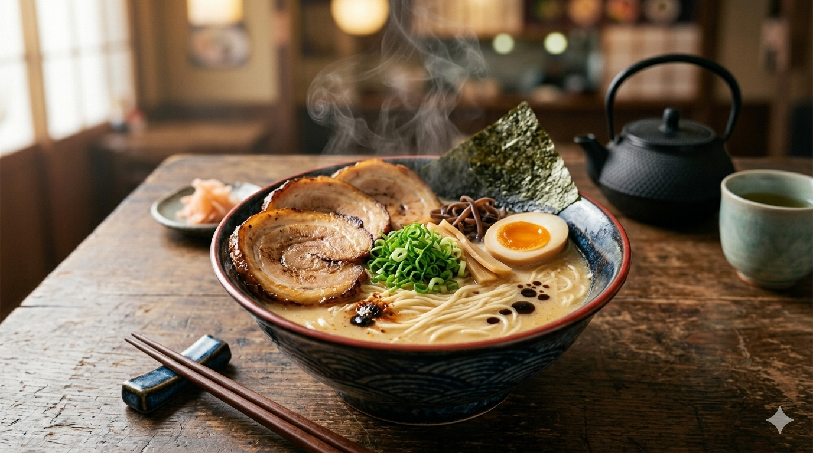
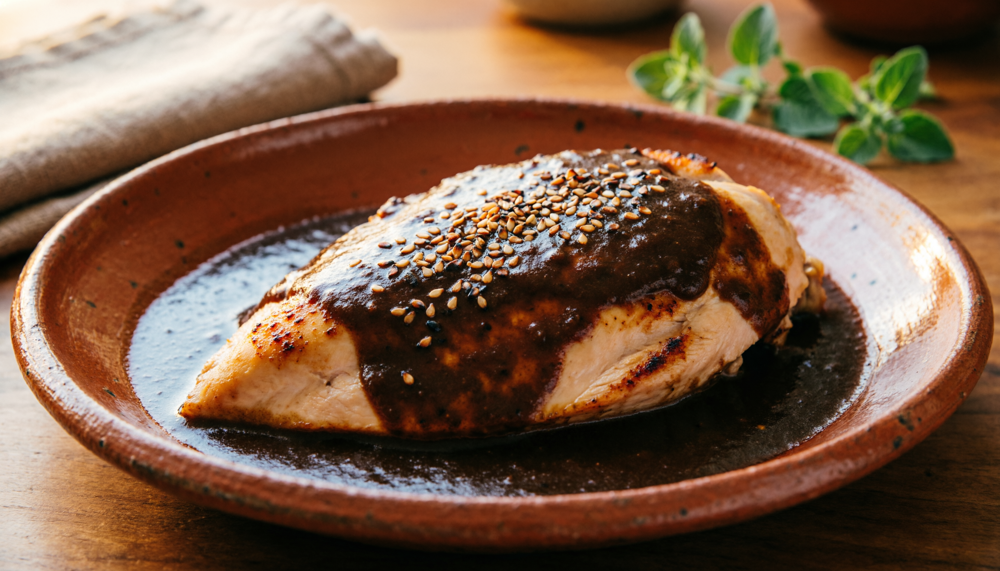
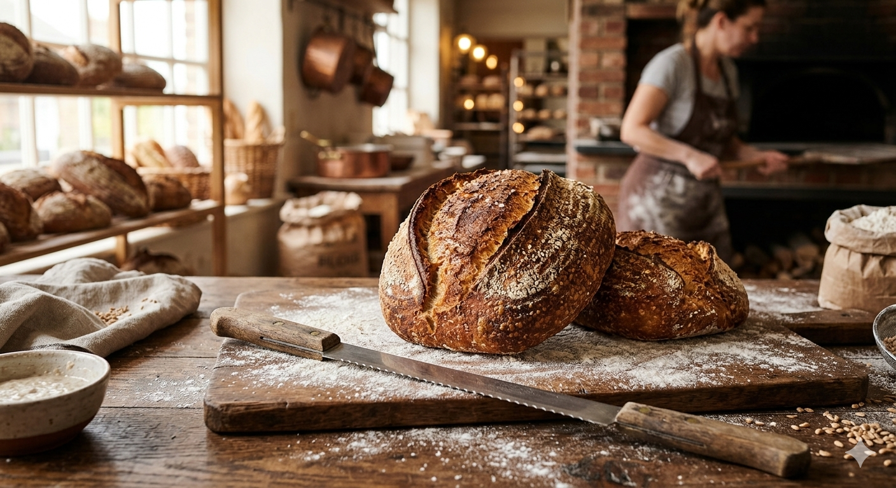
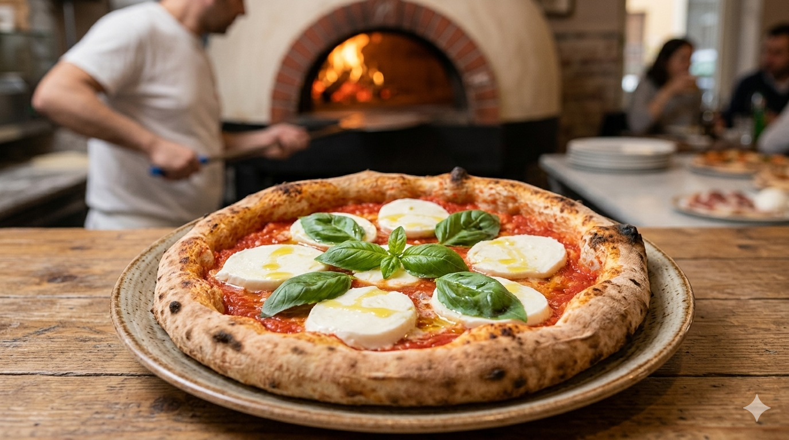
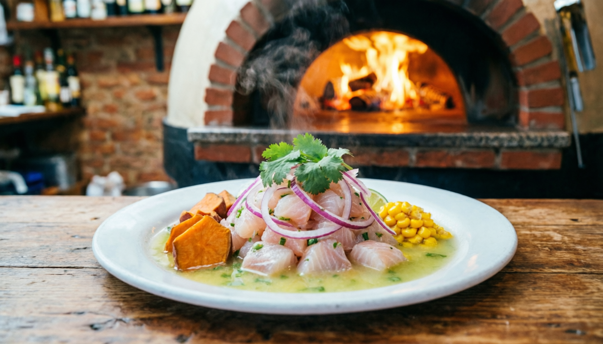
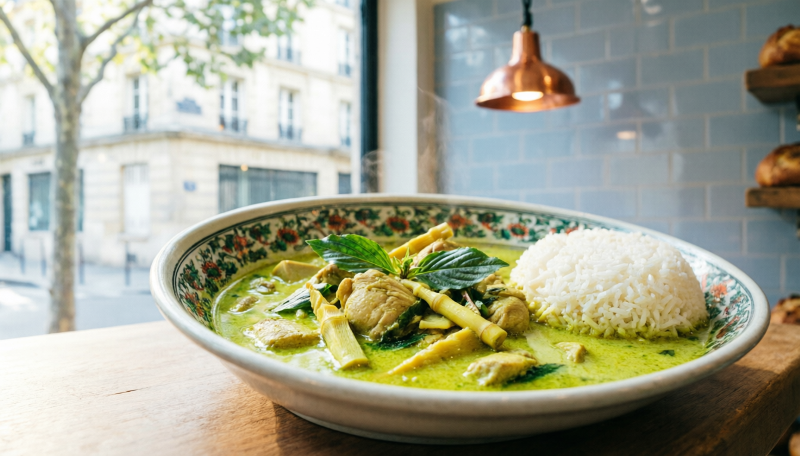

El Verdadero Ramen Japonés: Guía Completa
Descubre los secretos para preparar un ramen auténtico desde el caldo hasta los toppings perfectos...
Descubre una amplia variedad de contenido gastronómico organizado por temas
Mantente al día con nuestro contenido más fresco

DestacadoDescubre los secretos para preparar un ramen auténtico desde el caldo hasta los toppings perfectos...

El mole es mucho más que una salsa; es una tradición que une generaciones...

Aprende a hacer pan con masa madre y consigue una miga perfecta...
Conoce las especias más utilizadas en la cocina internacional...
Los favoritos de nuestra comunidad esta semana



Bienvenidos a Sabor & Tradición. Soy Christian, un apasionado de la gastronomía mundial con más de 10 años explorando cocinas, ingredientes y tradiciones culinarias.
Mi misión es compartir contigo los secretos de los platos más emblemáticos, las historias detrás de cada ingrediente y las técnicas que hacen única a cada cultura gastronómica.
A través de mi canal de YouTube y este blog, te invito a un viaje culinario inolvidable.
Opiniones de nuestra comunidad de foodies
Descubre nuestro contenido en Instagram